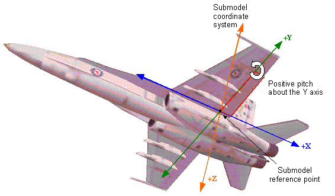

CIGI Host Emulator 3
|
CIGI Host Emulator 3 |
A submodel is a hierarchy of geometry nodes within a model (entity) for which a dynamic coordinate system (DCS) is defined. Transformations performed on the DCS affect the submodel geometry as a whole. For example, a flap on an aircraft might have a local coordinate system defined as shown in Figure 20 so that applying a positive pitch will rotate the flap above the wing.

Submodel Coordinate System
Position and rotation of submodels are defined with respect to this coordinate system. They are not cumulative. The order of rotation is as shown below:
Rotation in NED Coordinate System
The Articulated Part Control packet is used to manipulate submodels.
|
© 2008 The Boeing Company |
rev 3.3.0 |